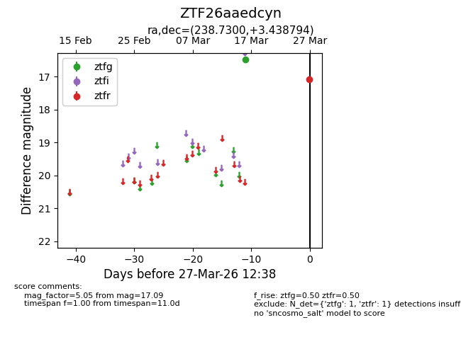
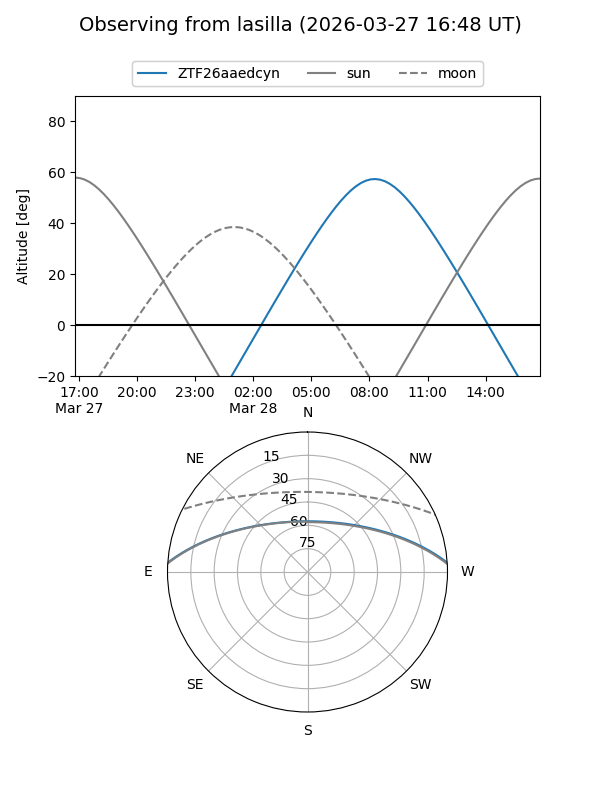
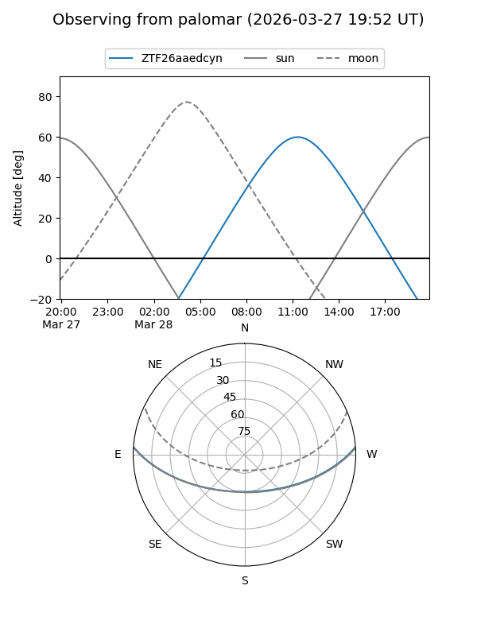

ZTF26aaedcyn
Target ZTF26aaedcyn at 2026-03-27 12:41
Aliases and brokers:
FINK: link
Lasair: link
ALeRCE: link
alt names
ZTF26aaedcyn (ztf,fink_ztf)
Coordinates:
equatorial (ra, dec) = 238.7300,+3.43879
equatorial (HMS+DMS) = 15:54:55.21,+03:26:19.66
galactic (l, b) = (12.7371,+40.23450)
Flags:
Photometry:
last ztfg=16.49, ztfr=17.09
1 ztfg, 1 ztfr detections
Lightcurve

Visibility


Additional plots